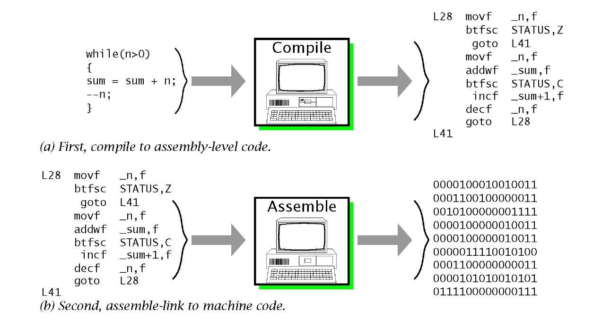

Very early computers, such as Colossus, were programmed without the help of a stored program, by modifying their circuitry or setting banks of physical controls. Slightly later, programs could be written in machine language, where the programmer writes each instruction in a numeric form the hardware can execute directly. For example, the instruction to add the value in two memory locations might consist of 3 numbers: an "opcode" that selects the "add" operation, and two memory locations. The programs, in decimal or binary form, were read in from punched cards, paper tape, magnetic tape or toggled in on switches on the front panel of the computer. Machine languages were later termed first-generation programming languages (1GL). The next step was the development of the so-called second-generation programming languages (2GL) or assembly languages, which were still closely tied to the instruction set architecture of the specific computer. These served to make the program much more human-readable and relieved the programmer of tedious and error-prone address calculations.
The first high-level programming languages, or third-generation programming languages (3GL), were written in the 1950s.
An early high-level programming language to be designed for a computer was Plankalkül,developed for the German Z3 by Konrad Zuse between 1943 and 1945. However, it was not implemented until 1998 and 2000.

John Mauchly's Short Code, proposed in 1949, was one of the first high-level languages ever developed for an electronic computer.
Unlike machine code, Short Code statements represented mathematical expressions in understandable form. However, the program had to be translated into machine code every time it ran, making the process much slower than running the equivalent machine code.
At the University of Manchester, Alick Glennie developed Autocode in the early 1950s. As a programming language, it used a compiler to automatically convert the language into machine code.
The first code and compiler was developed in 1952 for the Mark 1 computer at the University of Manchester and is considered to be the first compiled high-level programming language.
The second autocode was developed for the Mark 1 by R. A. Brooker in 1954 and was called the "Mark 1 Autocode". Brooker also developed an autocode for the Ferranti Mercury in the 1950s in conjunction with the University of Manchester. The version for the EDSAC 2 was devised by D. F. Hartley of University of Cambridge Mathematical Laboratory in 1961. Known as EDSAC 2 Autocode, it was a straight development from Mercury Autocode adapted for local circumstances and was noted for its object code optimisation and source-language diagnostics which were advanced for the time. A contemporary but separate thread of development, Atlas Autocode was developed for the University of Manchester Atlas 1 machine.